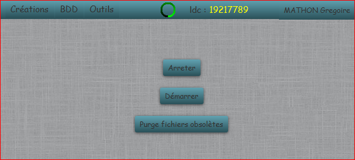

Gestion Fichier Pic
Permet de gérer le traitement des fichiers d'assemblage issus de la Pic.

- Arreter : Arrête le traitement des fichiers du quai de dépôt. l'icone de traitement passe au rouge.
- Démarrer : Démarre le traitement des fichiers du quai de dépôt. l'icone de traitement passe au vert.
- Purger : Supprime du répertoire les fichiers d'analyses obsolètes qui n'existe plus sur le serveur.